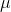
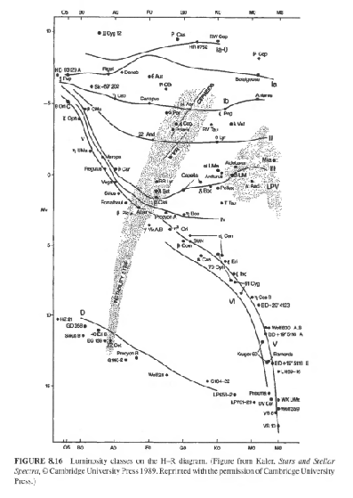
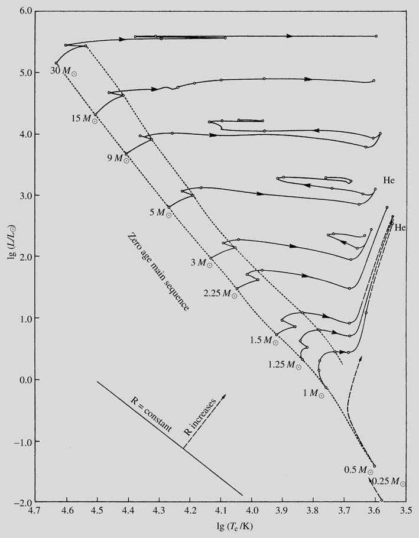
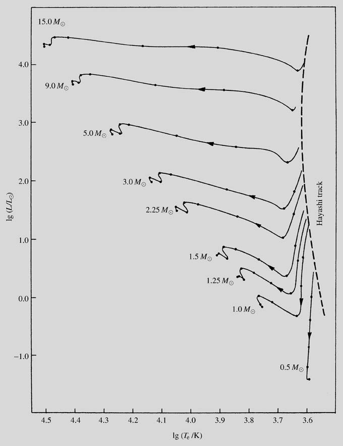
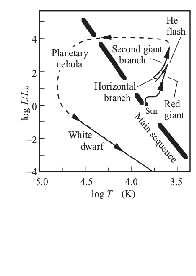
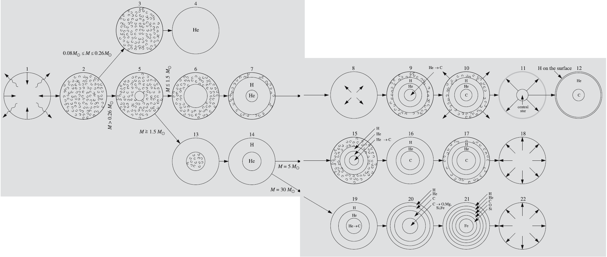
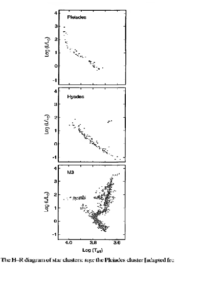
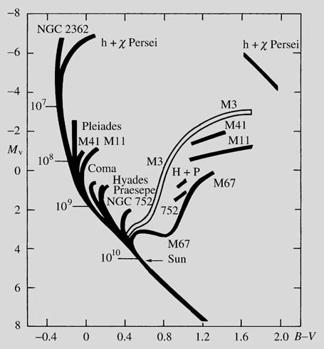

Introducción
"If simple perfect laws uniquely rule the universe, should not pure thought be
capable of uncovering this perfect set of laws without having to lean on the
crutches of tediously assembled observations? True, the laws to be discovered
may be perfect, but the human brain is not. Left on its own, it is prone to stray, as
many past examples sadly prove. In fact, we have missed few chances to err until
new data freshly gleaned from nature set us right again for the next steps. Thus
pillars rather man crutches are the observations on which we base our theories;
and for the theory of stellar evolution these pillars must be mere before we can
get far on the right track."
Martin Schwarzschild: Structure and Evolution of the Stars, 1958 (Dina Prialnik, “An introduction to the theory of stellar structure and evolution”,Cambridge Univeristy Press,2000)
De acuerdo a las palabras de Schwarzchild citadas anteriormente, los pilares en los que los científicos y, por ende, los astrónomos deben basar sus teorías son las observaciones y para la teoría de la evolución estelar éstas observaciones son las que nos indican si vamos por el camino correcto.
Por lo que, empezaremos definiendo de manera muy simple y poco detallada lo que es una estrella (para saber de qué estamos hablando), luego vamos a comentar lo que se observa (nuestros pilares) y finalmente, teniendo en cuenta ciertas suposiciones y basándonos en las leyes físicas que conocemos actualmente, vamos a contar sin profundizar demasiado el modelo de evolución estelar que surge a partir de juntar todo esto: observaciones, leyes y suposiciones.
Explicando muy brevemente qué es una estrella...
Una estrella puede ser definida como un cuerpo que satisface dos condiciones:
-está vinculada por auto gravedad. Como la gravedad es un campo con simetría esférica, la estrella tendrá la forma de una esfera, o será aproximadamente esférica si además hay alguna fuerza asimétrica presente (ejemplo: si la estrella rota, que de hecho todas lo hacen, aparecerá una fuerza centrífuga que la deformará haciéndola más achatada en sus polos)
-radía energía suministrada por una fuente interna. Esta fuente en general es energía nuclear producida por fusiones nucleares que se originan en el interior de la estrella y a veces puede ser energía potencial gravitacional liberada en contracción o colapso estelar. En el caso de las reacciones nucleares, se cree que las estrellas pasan la mayor parte de su vida fusionando hidrógeno en helio (luego lo veremos de manera un poco mas detallada aunque no tanto)
Si la estrella libera energía necesariamente tienen que ocurrir cambios en su estructura y/o composición o, lo que es lo mismo, tiene que evolucionar. De aquí podemos deducir que:
-en algún momento, después de que se forma la estrella empieza a irradiar energía. El nacimiento de una estrella es un tema que todavía presenta muchos interrogantes ya que no se conoce con exactitud el mecanismo de formación.
-la muerte de la estrella puede ocurrir por dos maneras: que viole la primer condición (auto gravedad), lo que significa que la estrella se destruye y expulsa el material al medio interestelar o que viole la segunda (radiación de energía suministrada internamente), lo que quiere decir que el combustible de alguna manera se agota. En este caso, la estrella se va apagando lentamente. Veremos que la mayoría de las estrellas terminan su vida con una combinación de ambos procesos.
Alguna idea acerca de escalas de tiempo...
Si consideramos que la estrella pasa la mayor parte de su vida irradiando energía producida por reacciones nucleares y éstas son producidas en el interior de la estrella, podemos tener una idea aproximada de cuánto tiempo vive una estrella si calculamos el tiempo en el que el hidrógeno disponible se transforma en helio. Teniendo en cuenta que según modelos teóricos de evolución, se consume sólo el 10% de la masa total de hidrógeno en la estrella y que el 0.007% de esa masa se transforma en energía, tenemos que:

Podemos ver que cuánto más masiva es una estrella tarda menos tiempo en agotar el combustible. A esta escala de tiempo se la llama escala de tiempo nuclear. Para el caso del Sol Tnuclear=10 10 años.
También existen otras escalas de tiempo que son mucho menores:
-escala de tiempo térmico: que es el tiempo en que la estrella radía su energía térmica cuando ésta ya no produce energía nuclear y es igual al tiempo que le toma a la radiación llegar desde el centro hasta la superficie de la estrella.En el caso del Sol representa 1/500 de la escala de tiempo atómico.
- escala de tiempo dinámico: es el tiempo que le tomaría a una estrella colapsar si la presión que la sostiene contra la gravedad desaparece. El Sol tardaría media hora.
Teniendo en cuenta estas escalas de tiempo, la información que podemos obtener está confinada a un período muy muy corto de la vida de una estrella. Para hacernos una idea de lo que esto significa, si comparamos el lapso de vida de una estrella con el del ser humano y tenemos en cuenta que el descubrimiento del telescopio hace un par de siglos representaría el momento en que empezamos a observar, esto equivaldría a mirar a una persona por tres minutos!! Sí, tres minutos. Es obvio que no se puede estudiar directamente la evolución de una estrella con sólo observarla. Para poder inferir cómo evoluciona, los astrónomos acumulan información de muchas muchas estrellas que se encuentran en diferentes estados de evolución.
Entonces, qué es lo que observamos?
Lo primero que podemos obtener de una estrella es su brillo aparente,es decir, la cantidad de radiación que nos llega por tiempo y unidad de área.Depende de la luminosidad de la estrella (radiación emitida por la estrella por tiempo y por unidad de área) y de la distancia a la que ésta se encuentra. Es por eso que si además podemos obtener por algún método su distancia entonces tendremos su luminosidad, que es una propiedad intrínseca de la estrella,
Además si la estrella no es muy débil podemos tomar su espectro. El espectro de una estrella y las líneas que aparecen en él (principalmente de absorción pero pueden aparecer también de emisión) nos dan información de la temperatura en su superficie y también de los elementos presentes en ella.La temperatura superficial puede ser obtenida a partir de la forma general de su espectro, el cual es muy similar al de un cuerpo negro. Llamamos temperatura efectiva Teff de una estrella a la temperatura que tendría un cuerpo negro si emitiera el mismo flujo de radiación.
El ancho de las líneas nos permite tener una idea de ciertas características de la estrella como por ejemplo su radio y su densidad (y con estos dos parámetros, su clase de luminosidad: por ejemplo, si es una estrella gigante o enana), su rotación, si su atmósfera tiene turbulencias o se está expandiendo...
Suposiciones básicas y leyes físicas
Para empezar vamos a hacer ciertas suposiciones,algunas basadas en las observaciones, que nos ayudarán a generar un modelo de evolución:
- las estrellas están aisladas, es decir, si bien se encuentran en cúmulos o galaxias, su evolución no se ve afectada por las demás. Por lo tanto, las condiciones iniciales son las que determinarán la evolución de la estrella. La evolución en sistemas binarios se verá luego como caso aparte.
- las estrellas nacen con una dada masa y una composición química homogénea, cuya mayor parte (se cree que más de un 70%) es hidrógeno. El resto se conforma principalmente de helio (25-30%) más algunas trazas del resto de los elementos químicos, que son llamados por los astrónomos elementos pesados o metales. Salvo algunas pocas excepciones, las abundancias de los elementos químicos observados en los espectros estelares , en las nubes moleculares a partir de las cuales creemos que se forman las estrellas y en el medio interestelar, son en general muy similares. Las mínimas diferencias de abundancias son un agente secundario en la evolución estelar; se estudiará luego que lo que determina principalmente cómo evoluciona una estrella es su masa, pero no nos adelantemos...
- tienen simetría aproximadamente esférica: en general se considera que la estrella es una esfera aunque no lo sea, para simplificar los cálculos y se agregan luego “perturbaciones” tales como rotación, deformación por viscosidad...
- se encuentran en equilibrio hidroestático: la fuerza de gravedad y la presión que genera el movimiento térmico del gas se encuentran en equilibrio.
- la energía fluye desde el centro hacia la superficie y está dada por la ecuación de equilibrio térmico(o distribución de luminosidad). Integrando esta ecuación ente el centro y el radio de la estrella tendremos la luminosidad del la misma. La energía total que es radiada por la estrella proviene de la energía creada en el interior estelar debido a reacciones nucleares(fusiones, como la estrella se compone principalmente de hidrógeno nos interesan los procesos que fusionan al mismo). Supondremos además que la estrella radía como un cuerpo negro.
- su energía se transporta de manera convectiva (transportada por la propia materia) o radiativa (transportada por fotones). El tipo de transporte que tendrá lugar en una determinada estrella está dado por el criterio de Schwarzchild:
.gif)
Este criterio nos dice que si el gradiente de transporte radiativo es mayor al gradiente de transporte convectivo entonces la energía se transportará de manera convectiva.
El transporte convectivo se da a altas temperaturas ya que en este caso este tipo de transporte es más eficiente. En las estrellas se darán los dos tipos de transporte pero dependiendo de su masa se darán en diferentes lugares. El radio en donde ambos gradientes se igualan marca el límite entre el núcleo y la envoltura de una estrella. Así estrellas masivas(masas mayores a 2MO) tienen núcleos convectivos y envolturas radiativas, estrellas con masas de 1.5 MO son radiativas, estrellas con masas similares a la solar tienen envoltura convectiva y núcleo radiativo y estrellas de masa menor a 0.2 MO son convectivas.
- se comportan como un gas ideal:
Ecuación de estado: P.V= nRT . Si tenemos en cuenta las abundancias químicas esta ecuación se verá levemente modificada.
De aquí podemos calcular la temperatura del núcleo, sabiendo cuánto vale la presión en el mismo, la cual nos da un valor de aproximadamente 107 K, temperatura suficiente como para que se den reacciones nucleares.
De acuerdo a estas suposiciones, y suponiedo además que son aplicables las leyes físicas válidas en la Tierra, tendremos las siguientes ecuaciones:
- Para describir la estrctura estelar:
- ecuación de equilibrio hidróstatico (para que la estrella se encuentre en equilibrio la presión que ejerce el gas debe ser de igual módulo que la fuerza gravitatoria):
.gif)
- conservación de la masa(la masa no se crea ni se destruye):
.gif)
- ecuación de la energía (la energía fluye desde el centro hacia la superficie)
.gif) donde
donde .gif) está relacionado con "la creación de energía"
está relacionado con "la creación de energía"
- transporte radiativo y convectivo
.gif) (radiativo)
(radiativo) .gif) (convectivo)
(convectivo)
- debido a que las estrellas producen su energía a partir de reacciones nucleares: en nuestro caso fusiones (unión de dos o más núcleos livianos en uno más pesado). Habrá una probabilidad de que éstas reacciones se produzcan.
Nos interesan principalmente aquellas que transforman hidrógeno en helio, ya que este es la fuente principal de energía de una estrella.
La fusión de hidrógeno en helio en las estrellas se puede producir por dos procesos:
1-cadena protón-protón o cadena pp:
.gif)
.gif)
.gif)
2-ciclo del Carbono o CNO:
.gif)
.gif)
.gif)
.gif)
.gif)
.gif)
La energía liberada por estas reacciones se puede calcular con la diferencia de masa entre los elementos iniciales y la masa de los elementos finales,lo cual nos da como resultado que el 0.007% de la masa de un protón se transforma en energía por la famosa ecuación: E=m.c2,
El proceso de fusión de Hidrógeno en Helio que se producirá(cadena pp o ciclo CNO) depende de cuan eficiente es este proceso en la estrella. Así en estrellas muy masivas y por lo tanto más calientes domina el ciclo CNO(siempre y cuando las estrellas tengan estos elementos químicos), mientras que en estrellas menos masivas y más frías domina la cadena pp.
Es también de interés la cadena 3α que transforma helio en carbono:
- Cadena 3α
.gif)
.gif)
.gif)
Durante el proceso evolutivo de una estrellas se pueden producir otras reacciones , pero sería demasiado extenso descibirlas a todas. Por lo que sólo diremos que las otras reacciones que se producen en la estrella tienen como finalidad producir energía a partir dela fusión de elementos más pesados que el carbono y más livianos que el hierro.
- teorema del virial (comportamiento de la estrella desde un punto de vista estadístico: explicación global del equilibrio hidroéstatico de la estrella que vincula la energía potencial y la cinética)
.gif)
- ley de Saha: En las estrellas y sobre todo en sus núcleos, las temperaturas son altas y por lo tanto predominan las colisiones entre átomos. El grado de ionizaciones consecutivas está dado por:
.gif)
Podemos ver que el grado de ionización aumenta con T y disminuye con el número de electrones.
- ley de Boltzmann (nos habla de la probabilidad de encontrar a un átomo en un determinado estado cuántico respecto a otro)
.gif)
De la ecuación anterior y haciendo cuentitas podemos ver que el número de átomos en un estado cuántico respecto al total estará dado por:
.gif)
- Ley de Plank
.gif)
(intensidad de la radiación emitida por un cuerpo negro para una determinada longitud de onda y temperatura)
Integrando en todas las longitudes de onda obtenemos la Ley de Stefan-Boltzmann para la radiación de un cuerpo negro(E=σT4)
La luminosidad de la estrella estará dada por
.gif)
- equivalencia entre masa y energía dada por la expresión de la teoría de la relatividad de Einstein: E=m.c2
Importancia del diagrama HR en la construcción de modelos de evolución estelar
Las dos propiedades fundamentales de las estrellas que podemos inferir a partir de la observación son, como ya habíamos visto, la luminosidad y la temperatura efectiva Teff.
El diagrama Hertzsprung-Russell o HR es un diagrama que relaciona la luminosidad o la magnitud absoluta de la estrella con su clase espectral (según la clasificación MKK: O-B-F-G-K-M) , su color (por ejemplo B-V) o su temperatura efectiva Teff. Si ponemos la mayor cantidad posible de estrellas que observamos, éstas se ubican de manera no uniforme en regiones determinadas del diagrama como se puede ver en el gráfico.

Figura 1: Diagrama HR que vincula las clases de luminosidad con su magnitud absoluta ("An introduction to modern astrophysics")
Cada una de estas regiones representa una clase de luminosidad diferente:
Ia Supergigantes brillantes
Ib Supergigantes
II Gigantes brillantes
III Gigantes
IV Subgigantes
V Secuencia principal o enanas
VI (or sd) Subenenas
D (or VII) Enanas blancas
La mayoría de las estrellas se encuentran en una banda diagonal que va desde el extremo superior izquierdo (estrellas luminosas de alta temperatura) al extremo inferior derecho(estrellas de menor luminosidad y temperatura, densas y de radios menores la solar), la cual se denomina secuencia principal.
Otra región bastante poblada es la rama de las gigantes (estrellas de baja densidad y radios mayores la solar) que ocupa la franja superior del diagrama, sobre todo en la parte derecha:son las gigantes rojas. También aparecen varias estrellas en el extremo inferior derecho (enanas blancas).
Como veremos el diagrama HR juega un rol fundamental en la construcción de modelos de evolución estelar.
Russell , por ejemplo, interpretó que este diagrama representaba una secuencia evolutiva (lo cual concuerda con el modelo actual) en donde la estrella se contraía gravitatoriamente (la energía gravitatoria se transformaba en la radiación emitida por la estrella) desde la región de las gigantes hacia la secuencia principal, yendo desde la parte superior de esta banda diagonal hacia el extremo inferior derecho (lo cual hoy sabemos que es incorrecto).
Si la estrella forma parte de un sistema binario, aplicando las leyes de la mecánica, podemos obtener bajo ciertas circunstancias su masa o alguna aproximación de la misma.
Si podemos determinar la masa y la luminosidad de una estrella, podemos poner en un gráfico estas dos propiedades. En el mismo se puede visualizar una correlación entre masa y luminosidad: la luminosidad es proporcional a Mα. Esto nos da una idea acerca de ciertas características de la evolución estelar. Por ejemplo: el tiempo de vida de una estrella está dado aproximadamente por:Tnuclear ~M/L~M/Mα~1/Mα-1.Esto nos dice que cuánto mayor sea la luminosidad o la masa menor será el tiempo en la secuencia principal. Y por lo tanto, como habíamos anticipado antes podemos decir que la masa de una estrella es un parámetro fundamental en su evolución.
Entonces la secuencia principal sería en cierto sentido una secuencia de masas estelares, cuyo crecimiento va desde el lado inferior derecho hacia el superior izquierdo.
Las estrellas graficadas en el diagrama son las estrellas que observamos y tendrán diferentes edades y diferentes masas, por lo que podemos interpretar que la dispersión de puntos en el diagrama HR se debe a diferentes etapas en la evolución estelar o a diferentes masas (ya que como vimos la luminosidad y la temperatura superficial dependen fuertemente de su masa), respectivamente. De estas interpretaciones podemos decir que:
- la mayoría de las estrellas se encuentran en la secuencia principal porque pasan la mayor parte de su vida en ella y que en esta etapa fusionan Hidrógeno en Helio (ya que es su fuente principal de energía).
- la masa será la que determinará, principalmente, la evolución de la estrella.
Generando modelos de evolución estelar (casi a modo de "cuentito")
Juntando tooodos estos componentes: observaciones, suposiciones y las leyes que necesitamos para describir a una estrellas se puede generar un modelo de estructura y evolución estelar.
Es muy útil además visualizar este modelo utilizando nuevamente el diagrama HR. Llamamos camino o track evolutivo a la trayectoria representada en un diagrama HR que realiza una estrella a lo largo de su vida.
En general, las estrellas se forman a partir de la contracción de un segmento de una nube de gas y cuando se encienden entran en la fase de secuencia principal. Allí pasan la mayor parte de su vida,fusionando hidrógeno en helio en el núcleo de la misma. Cuando el hidrógeno del núcleo se agota,la estrella entra en la fase de gigante y luego pasan a una etapa final. En las últimas etapas las estrellas expulsan parte de su masa , algunas veces, en forma de elementos más pesados que el hidrógeno, enriqueciendo el medio interestelar.
La manera en la que la fusión de hidrógeno se produce, cuánto tiempo la estrella se encuentra en la secuencia principal, cómo pasa a la fase de gigante y cómo termina su vida depende principalmente de la masa de la misma. Es por eso que podemos decir que la masa de una estrella es el factor determinante en este camino evolutivo. Así, para distintas masas tendremos diferentes caminos:

Figura 2: Tracks evolutivos para diferentes masas estelares( H. Karttunen,P.Krögger.. “Fundamental astromomy”, fifth edition, Ed.Springer,2006 )
Contracción de la estrella hacia la secuencia principal
Una nube de gas interestelar rotante, cuya masa es mayor a la masa de Jeans (masa mínima a una determinada temperatura T tal que la nube se contrae Mjeans=1.1 10⁴T³/²/n1/2),
colapsa debido a inestabilidades producidas debido a que la fuerza de gravedad es mayor a la presión del gas y se fragmenta. A partir de estos fragmentos se formarán estrellas que conservarán la energía, el momento angular y el magnético. En el diagrama HR estas protoestrellas o estrellas en fomación aparecen cerca de la secuencia principal , en la parte superior derecha, sobre el límite de Hayashi. El límite de Hayashi da la ubicación en el diagrama HR de estrellas totalmente convectivas. Las estrellas que se encuentran a su derecha no están en equilibrio hidroéstatico y colapsan. Como las estrellas en formación deben tener una temperatura relativamente alta, con grandes tamaños, tienen una alta luminosidad debida al calor generado por la compresión del gas. Sin embargo, es difícil observarlas ya que están rodeadas de nubes densas de polvo y gas. Ejemplo: Estrellas T Tauri.
La contracción de la protoestrella cesa cuando comienza la fusión de hIdrógeno, es decir, cuando el núcleo alcanza una temperatura de 107 K. En este momento comienza su vida como estrella. En un diagrama HR se ubica sobre la ZAMS (secuencia principal de edad cero) que se encuentra en el borde inferior de la secuencia principal .
A partir de aquí, la estrella pasará la mayor parte de su vida en la secuencia principal fusionando hidrógeno en helio,moviéndose muy lentamente hacia el borde superior de la secuencia principal (TAMS) La estrella se encuentra aquí en equilibrio hidroestático. La posición de la estrella en la secuencia principal depende fuertemente de su masa.

Estrellas de baja masa (M<0.5MO)
Las estrellas de masa de menor masa posible (M≈ 0.08MO) tienen un tiempo de vida en la secuencia principal de 10¹³ años, mientras que aquellas que tienen M≈0.25MO, 10¹². Como los tiempos de vida de estrellas con masa M<0.5MO sin mas largos que la edad del universo, ninguna de ellas tuvo tiempo de dejar la secuencia principal (se encuentran en la parte más inferior de la misma). Es por eso que el campo de estudio de estas estrellas es puramente teórico. Luego de una laaarga quema de hidrógeno en helio, estas estrellas no tienen suficiente energía gravitacional para calentar su núcleo a temperaturas que fusiones Helio por lo que no pasan por la fase de gigante roja sino que evolucionan directamente a enanas blancas de Helio. Las enanas blancas son estrellas remanentes muy densas que no producen energía nuclear y por lo tanto se van enfriando. Se sostienen por la presión del gas degenerado de electrones.
Estrellas de masa de tipo solar y de masa intermedia(2-8 MO)
Para estrellas con masa solar, el tiempo en secuencia principal es de aproximadamente 10¹⁰ años. Su núcleo es radiativo y su envoltura convectiva y fusionan Hidrógeno por la cadena protón-protón. Si la estrella tiene una masa entre 1.5 y 2 MO será toda convectiva y si es mayor a dos masas solares su núcleo será convectivo, su envoltura radiativa y transformará hidrógeno en helio por el ciclo CNO.
Cuando el hidrógeno en el centro se agota, deja un núcleo de helio en el centro. El hidrógeno continúa fusionándose en una capa que envuelve al núcleo y la envoltura se expande (fase gigante roja).Las estrellas de estas masas intermedias suben casi verticalmente por el diagrama HR. Este y los demas movimientos a lo largo de los caminos evolutivos descriptos en la monografía pueden verse en la figura 2. En la fase de gigante roja la estrella aumenta su radio y disminuye su temperatura hasta el límite de Hayashi.. Cuando el núcleo se contrae, se vuelve más compacto e incrementa la temperatura, lo que permite la quema de helio. Sin embargo, como la temperatura aumenta debido a la producción de energía, la presión no se modifica y el núcleo continúa colapsándose, aumentando la temperatura hasta 1.10 ⁸ K y la producción de energía. El helio se quema explosivamente y la temperatura continúa subiendo. Este proceso se denomina Flash de helio. Durante este flash la luminosidad de la estrella aumenta muchísimo. Pero esta fase dura muy poco (<10³ años) La estrella responde expandiéndose y, a pesar de que aumenta su luminosidad, la temperatura superficial decrece. Después del Flash de helio, la estrella se ubica en la rama horizontal de las gigantes. La posición en esta rama depende de la masa de la envoltura ya que pierde parte de esta en el Flash de helio. Mientras que la luminosidad no varía mucho, sí lo hacen las temperaturas efectivas, las cuales serán mayores para las estrellas con menos masa en su envoltura. Estrellas con masas intermedias (2.3 MO<M<8MO) no pasan por la etapa del flash de helio.
La rama horizontal está dividida en una parte azul y una roja con una brecha correspondiente a la inestabilidad de pulsantes lideradas por las variables RR Lyrae.
Si el núcleo de helio alcanza una temperatura mayor a 10⁸ K, empieza a quemarlo en elementos más pesados como carbono, oxígeno y neón liberando energía, la cual aumenta la temperatura que incrementa la tasa de fusiones. La estrella pasa a la rama horizontal de las gigantes. La estrella se mueve del brazo de las gigantes rojas hacia colores más azules pero luego vuelve nuevamente cerca del límite de Hayashi. Una consecuencia importante de estas idas y vueltas es que las estrellas de masas intermedias pasan por la zona del diagrama HR correspondiente a las variables cefeidas.
Las estrellas pueden expulsar grandes cantidades de materia durante su fase de gigante en forma de viento estelar. Por lo tanto las estrellas van perdiendo masa a medida que evolucionan.
Para estrellas con masas iniciales menores a 4MO, este es el fin de la quema nuclear. La estrella expulsa su envoltura difusa en forma de nebulosa planetaria y el núcleo se contrae hasta que alcanza la presión del gas degenerado de electrones. La estrella termina como una enana blanca de carbono y oxígeno con una temperatura de 10⁷ K. La envoltura en expansión tiene una velocidad de 10km/s y una temperatura de 10000K. Esta fase planetaria puede durar aproximadamente 5 × 10⁴ años.
Si graficamos en el diagrama HR el track evolutivo que acabamos de contar para una estrella de masa solar nos queda:

Figura 4: Track evolutivo de una estrella de masa solar (Bradt h. 2008, "Astropysical proceses")
Estrellas masivas (M>8MO)
Estas estrellas se encuentran el parte superior izquierda de la secuencia principal y pasan menos tiempo en la misma , queman hidrógeno por el ciclo CNO, son más luminosas y agotan su Hidrógeno más rápido (por su estadía en la secuencia principal es menor).La evolución en estas estrellas luego de salir de la TAMS es casi horizontal (de izquierda a derecha).Cuando se gasta el hidrógeno del núcleo, la estrella evoluciona y quema helio para producir carbono y oxígeno. La estrella se ubica en la rama asintótica de las gigantes. Cuando esta fase termina, el núcleo se contrae y quema sucesivamente carbono,neón, oxígeno y silicio. A medida que produce un nuevo elemento en el núcleo, quema el anterior en una capa inmediata a ésta: así la estructura de la estrella termina formada por una serie de capas concéntricas que queman elementos más pesados a medida que nos acercamos al núcleo (una especie de cebolla cuyas capas tienen distinta fases de fusiones nucleares).
Al finalizar cada sucesiva ronda de fusión nuclear, el núcleo se contrae y las capas exteriores se expanden (supergigantes o supergigantes luminosas si son muy masivas). Cuánto más masiva sea la estrella las sucesivas reacciones nucleares se completan más rápido. Una estrella masiva promedio pasa aproximadamente 7.10⁶ años en la secuencia principal (quema de hidrógeno) mientras que la etapa de fusión de silicio dura un día!!
En estrellas muy masivas la quema de Helio empieza antes de que la estrella llegue a la rama de las gigantes rojas. Algunas continuarán moviéndose a la derecha del diagrama HR mientras que otras producirán un importante viento estelar lo que implicará una gran pérdida de masa y por lo tanto una leve modificación en su track evolutivo.Las estrellas en esta fase son conocidas como variables azules luminosas. Si la estrella puede retener su envoltura se vuelve una supergigante roja. Sino vuelve al “lado azul” del diagrama HR terminando como una estrella Wolf–Rayet (aunque estas etapas de la evolución son poco conocidas aún).
Las estrellas masivas pueden llegar a tener radios de 1000RO y luminosidades de 10⁶ LO.
En la quema de silicio, estos núcleos se fusionan en hierro Fe⁵⁶, el elemento con mayor energía de ligadura y por lo tanto el más estable (ver Reacciones Nucleares). Elementos más pesados que el hierro no liberan energía al fusionarse sino que la absorben. Se produce una “crisis energética” en el núcleo. El núcleo de hierro se contrae y la temperatura aumenta. La contracción continúa hasta que la temperatura en las regiones centrales son tan altas que algunos fotones tienen suficiente energía para destruir los núcleos de hierro (fotodesintegración del Fe), Estas reacciones son endotérmicas, es decir, absorben energía. La contracción del núcleo se detiene pero el material de las capas exteriores sigue contrayéndose por lo que rebota (con v≈0.15c). Se produce una onda de choque ,el material se comprime y se producen fusiones que producen elementos mas pesados que el hierro (por captura neutrónica). La expulsión violenta de las últimas capas produce una gran explosión denominada supernova de tipo II, la cual puede alcanzar una magnitud máxima de Mv=-17 (brilla tanto como una galaxia!).
El material remanente de la supernova se aleja de la estrella a altas velocidades. El núcleo cuya masa es superior al límite de Chandrasekhar (≈1.4 MO) no se puede sostener la presión del gas degenerado de electrones y colapsa en una estrella de neutrones (si el remanente estelar fue de 1.4MO<M<3MO) o agujero negro (si el remanente estelar fue de M>3MO)
Evolución de manera gráfica y muuy resumida

Figura 5: Evolution schemes for stars with different masses ( H. Karttunen,P.Krögger.. “Fundamental astromomy”, fifth edition, Ed.Springer,2000)
Contracción a partir de una nube de gas(1) → inestabilidad de Jeans→fragmentación de la nube→ protoestrella (2).
Las siguientes fases de evolución dependen de la masa de la estrella:
M<0.08 MO → enana marrón
M> 0.08 MO → quema de hidrógeno(T>4x106K), fase secuencia principal: 0.08MO <M<0.26MO : estrellas enteramente convectivas(3), queman muy lento el hidrógeno → se contraen en enanas blancas de helio(4)
M>0.26MO → centro radiativo mientras la opacidad decrece (5).
Si 0.26MO <M<1.5MO → estrellas de baja masa con centro radiativo y parte externa convectiva: fase secuencia principal-ciclo pp(6) → final de la secuencia principal: núcleo de helio rodeado por una capa de hidrógeno que se quema(7) → La parte externa se expande: fase gigante → flash de helio(8) → quema de helio(9) → quema de helio en una capa concéntrica al núcleo(10) → la parte externa se expande→ nebulosa planetaria(11)→ enana blanca(12)
Si M>1.5MO →estrellas masivas con centro convectivo y parte externa radiativa: fase secuencia principal- ciclo CNO(13) → fin de secuencia principal: se agota el hidrógeno en el núcleo, comienzo de la quema en capas → quema de helio (15 y 19) → quema de helio en capas(16 y 20) →para 3MO <M<15MO quema de carbono → flash de carbono (17) → explosión de supernova (18). Para M>15MO : quema de carbono en oxígeno y magnesio → quema de elementos pesados en capas: finalmente queda un núcleo de hierro rodeado de capas de silicio, oxígeno, carbono, helio(21) → supernova (22)→ estrella de neutrones o agujero negro (dependiendo de la masa)
La evolución estelar se puede ver afectada por:
- Metalicidad: Como ya habíamos mencionado antes, la composición química de la estrella es un factor secundario en la evolución debido a que las diferencias de cantidades de elementos que componen a las estrellas son bastante similares. Sin embargo, al cambiarla posición de las estrellas en el diagrama HR, tendremos evoluciones ligeramente diferentes. Por ejemplo:
-la metalicidad afecta la opacidad de una estrella aumentándola por lo que a mayor cantidad de metales presentes menor temperatura y mayor tamaño
-para estrellas masivas, las más ricas en metales pierden más masa por vientos estelares. Por lo tanto, la fase final variará. Una estrella de este tipocon alta metalicidad no llega a retener suficiente masa como para convertirse en un agujero negro.
- Rotación: La rotación estelar hace que elementos pesados (N, C, O) puedan "subir" a la superficie estelar, modificando sus espectros (abundancias "observadas"), pero también que hidrógeno de capas superiores "caiga" al interior, lo cual significa mayor cantidad de combustible disponible y entonces una estadía en la secuencia principal más larga.
- Sistemas binarios: Los últimos estudios observacionales indican que un porcentaje importante de las estrellas se encuentran en sistemas binarios o múltiples (este porcentaje parece ser mayor en estrellas masivas, más del 60%).
Si las componentes estelares de un sistema binario se encuentran bastante separadas cada una evolucionará de manera independiente. En cambio si las mismas se encuentran suficientemente cerca, interactuarán y afectarán la evolución de la otra. Este es el caso, por ejemplo, de un sistema binario formado por una estrella que se encuentra en fase de gigante y por una enana blanca: si la estrella gigante llena su lóbulo de Roche2 le transferirá masa a la enana blanca. Pueden suceder dos cosas: que el Hidrógeno y Helio que cae sobre la superficie de la enana blanca sea comprimido y calentado produciendo reacciones nucleares explosivas con gran emisión de energía (este evento se denomina nova) o que la enana blanca tenga una masa muy cercana al límite de Chandrasekhar y que al acretar masa supere este límite produciéndose una explosión de supernova de tipo I. Si la estrella compañera de esta gigante es una estrella de neutrones o un agujero negro, el disco de acreción que se forma emitirá rayos X debido al calentamiento de este por la fricción que se genera.
2Región del espacio alrededor de una estrella en la que el material está ligado a esa estrella. Si la estrella supera ese límite en un sistema binario, entonces el material exterior a ese lóbulo será atraído por la otra estrella formándose discos de acreción.
- Otros fenómenos: La evolución en estrellas masivas es modificada, como vimos, por la pérdida de masa a través de los vientos estelares, y también por campos magnéticos ya que todos estos casos pueden afectar las características del colapso.
Importancia del diagrama HR para testear el modelo de evolución estelar: Diagrama HR de cúmulos estelares:
Una buena manera de ver si las interpretaciones y los modelos descritos anteriormente son válidos es haciendo diagramas HR de cúmulos, ya que suponemos que las estrellas del mismo se formaron mas o menos al mismo tiempo a partir de la fragmentación de una nube molecular inicial. Además, podemos suponer que se encuentran a la misma distancia por lo que es lo mismo utilizar la magnitud aparente que la absoluta (llamados diagramas color-magnitud, ver Diagrama Hertzsprung-Russell).
Los diagramas HR de cúmulos representan por lo tanto un diagrama de estrellas con la misma edad y la misma metalicidad y por lo tanto, me dan indicios de cuán viejo es un cúmulo. En el siguiente gráfico podemos ver el diagrama HR de dos cúmulos abiertos y uno cerrado (globular) típicos en ese orden.

Figura 6: Diagrama HR de Cúmulos (Dina Prialnik, “An introduction to the theory of stellar structure and evolution”,Cambridge Univeristy Press,2000)
Las distribuciones de las estrellas en el HR de cúmulos se interpretan de la siguiente manera:
Debido a que en los cúmulos las estrellas tienen la misma edad, las configuraciones que se forman en los mismos dependen de la edad del cúmulo. Las estrellas masivas evolucionan más rápido por lo que pasarán de la fase de secuencia principal a la rama de las gigantes antes que las estrellas más livianas. Cuánto más edad tenga el cúmulo mayor será el número de estrellas que habrán evolucionado. El turn-off es por lo tanto el indicador más importante para determinar la edad de un cúmulo.
Un cúmulo que "recién" se forma tendrá por lo tanto muchas estrellas masivas en secuencia principal y algunas livianas en la presecuencia. A medida que vemos cúmulos más viejos las estrellas masivas ya evolucionaron a gigantes (o evolucionaron a agujeros negros, estrellas de neutrones, etc. y ya no los "vemos" en el HR) y las de menor masa se encuentran en la secuencia prinicpal. Cuánto más abajo se encuentre el punto de turn-off más viejo será el cúmulo. Si el cúmulo es lo suficientemente viejo en el diagrama HR aparecerán estrellas en la región de las subgigantes (estrellas poco masivas evolucionadas).
Si a partir del modelo evolutivo que contamos en las secciones anteriores graficamos en el HR isocronas (es decir, curvas que representen estrellas de distinta masa y de igual edad) puedo compararlas con los diagramas de cúmulos, testear los modelos y determinar la edad de los cúmulos.
Los cúmulos abiertos por lo tanto son en general cúmulos jóvenes (del orden de 107 años) mientras que los globulares son mucho más viejos (del orden de 109 años ).

Bibiografía
-Bibliografía de consulta y apuntes de clase de las cátedras de Astronomía estelar y Asoronomía general, FCAGLP, UNLP
-Dina Prialnik, “An introduction to the theory of stellar structure and evolution”,Cambridge Univeristy Press,2000
-H. Karttunen,P.Krögger.. “Fundamental astromomy”, fifth edition, Ed.Springer,2006
-R.Kippenhahn,A. Weigert, “Stellar structure and evolution”, Ed.Springer,1996
-P.Bakulin,E.V.Kononovich,V.I.Moroz, “Curso astronomía general”, Ed. Mir, 1987
-K.S. De Boer, W,Seggewiss,”Stars and stellar evolution”,Ed.EDP Sciences,2008
-M.Salaris,S.Cassini, “Evolution of stars and stellar population”, ED John Wiiley ans sons,2005